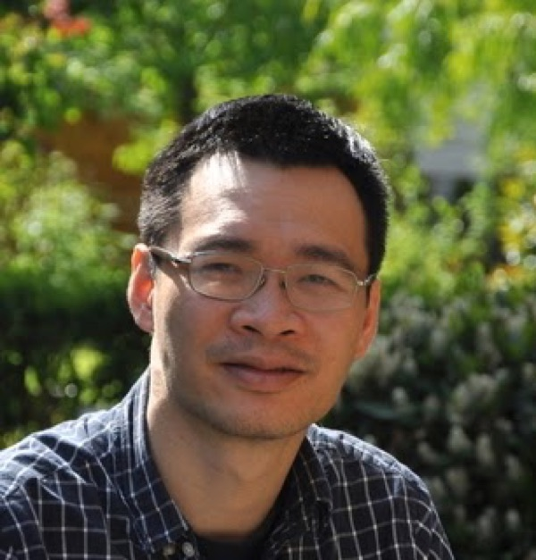
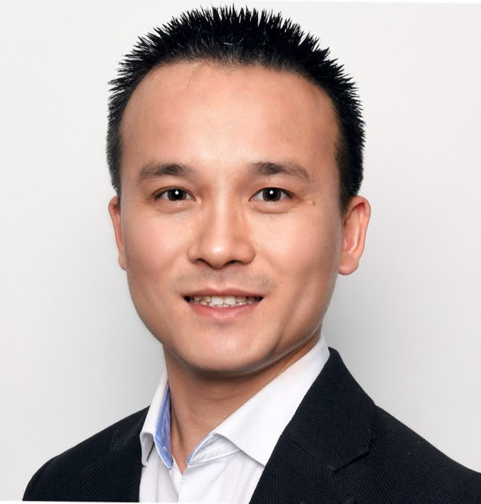
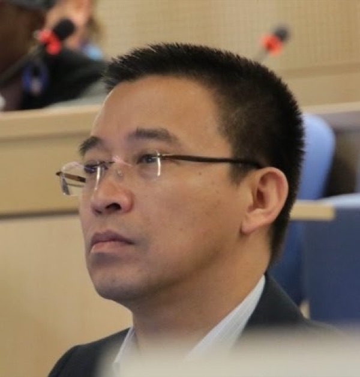
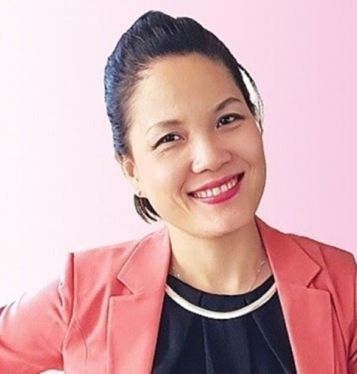
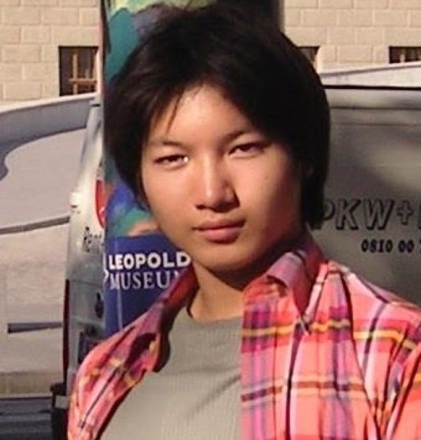

Kết nối hợp tác
Xây dựng mạng lưới chuyên gia, đối tác và cơ hội hợp tác dự án giữa Việt Nam và Thụy Sĩ.
Association of Vietnamese Intellectuals and Experts in Switzerland
AVIES là mạng lưới trí thức và chuyên gia người Việt, gốc Việt đang sinh sống, làm việc, học tập và nghiên cứu tại Thụy Sĩ. Hội kết nối năng lực chuyên môn để cùng trao đổi, hợp tác và đóng góp cho cộng đồng.
Một tổ chức của cộng đồng chuyên gia
Được thành lập tại Genève vào tháng 6 năm 2018, AVIES quy tụ trí thức và chuyên gia Việt Nam, gốc Việt đang làm việc, học tập hoặc nghiên cứu tại Thụy Sĩ.
Hội hoạt động theo điều lệ và Điều 60 Bộ luật Dân sự Thụy Sĩ; AVIES là tổ chức phi lợi nhuận, phi chính trị và phi tôn giáo. Mạng lưới tạo không gian để thành viên chia sẻ kinh nghiệm, phát triển ý tưởng và tìm kiếm đối tác phù hợp.
Ba hướng hoạt động gắn kết tri thức chuyên môn với những cơ hội hợp tác giữa Việt Nam, Thụy Sĩ và mạng lưới quốc tế.
Xây dựng mạng lưới chuyên gia, đối tác và cơ hội hợp tác dự án giữa Việt Nam và Thụy Sĩ.
Hỗ trợ triển khai ý tưởng, phát triển dự án trong các lĩnh vực khoa học, công nghệ, tài chính, y tế và xã hội.
Tạo diễn đàn, tọa đàm và cơ hội để thành viên thảo luận, chia sẻ chuyên môn, kinh nghiệm và ý tưởng, tư vấn cho tổ chức, cá nhân.
Cùng đóng góp năng lực chuyên môn
AVIES hướng tới người Việt Nam hoặc người gốc Việt có trình độ từ đại học trở lên, đang làm việc, học tập hoặc nghiên cứu tại một cơ quan, trường học hay đơn vị ở Thụy Sĩ.
Tìm hiểu cách tham giaĐại diện và điều phối hoạt động Hội
Thông tin chức vụ và hình ảnh được giới thiệu trên trang Liên hệ của AVIES.

Chủ tịch Hội
LinkedIn ↗
Thành viên Ban Chấp hành
LinkedIn ↗
Thành viên Ban Chấp hành
LinkedIn ↗
Thành viên Ban Chấp hành
LinkedIn ↗
Thư ký